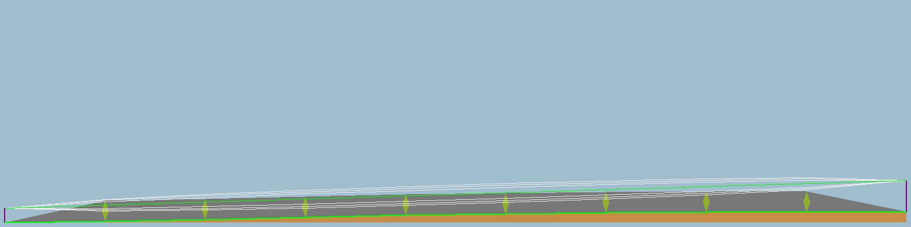
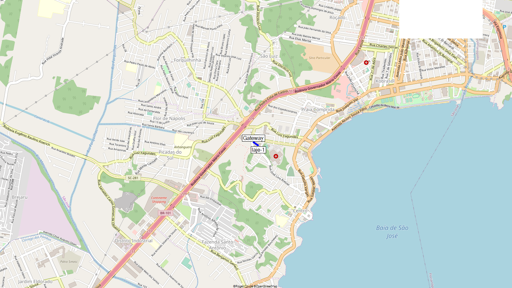

|  |
| laje-1 x gateway |
|---|
laje-1 (1)
| Latitude |
-27.608464 |
° |
| Longitude |
-48.633043 |
° |
| Ground elevation |
45.9 |
m |
| Antenna height |
7.0 |
m |
| Azimuth |
307.11 TN | 327.01 MG |
° |
| Tilt |
8.98 |
° |
|
(2)
Gateway
| Latitude |
-27.608007 |
° |
| Longitude |
-48.633724 |
° |
| Ground elevation |
51.2 |
m |
| Antenna height |
15.0 |
m |
| Azimuth |
127.12 TN | 147.01 MG |
° |
| Tilt |
-8.98 |
° |
|
Radio system
| TX power |
13.89 |
dBm |
| TX line loss |
0.00 |
dB |
| TX antenna gain |
0.00 |
dBi |
| RX antenna gain |
0.00 |
dBi |
| RX line loss |
0.00 |
dB |
| RX sensitivity |
-130.04 |
dBm |
| Propagation
| Free space loss |
70.24 |
dB |
| Obstruction loss |
0.11 |
dB |
| Forest loss |
0.00 |
dB |
| Urban loss |
0.00 |
dB |
| Statistical loss |
5.13 |
dB |
| Total path loss |
75.48 |
dB |
|
Performance
| Distance |
0.084 |
km |
| Precision |
9.4 |
m |
| Frequency |
915.000 |
MHz |
| Equivalent Isotropically Radiated Power |
0.025 |
W |
| System gain |
143.93 |
dB |
| Required reliability |
70.000 |
% |
| Received Signal |
-61.59 |
dBm |
| Received Signal |
186.47 |
μV |
| Fade Margin |
68.45 |
dB |
|
|

|